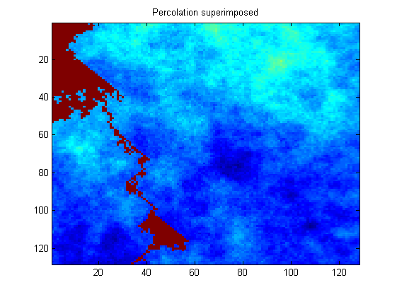
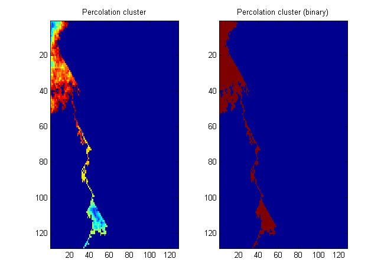
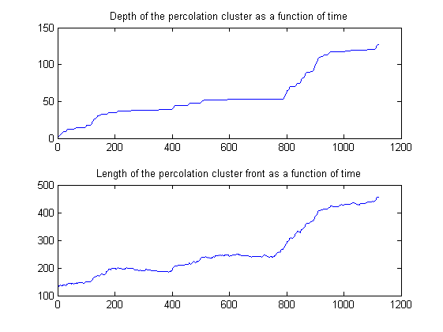

| FRACLAB Functions |
|
Simulates an Invasion Percolation
[P,PC,PCB] = percolation(MAT)
[P,PC,PCB] = percolation(...,'Visualization')
[P,PC,PCB] = percolation(...,'Propertyname',Propertyvalue)
[...,depth,front] = percolation(...)
[P,PC,PCB] = percolation(MAT) Simulates an invasion percolation in a input material, MAT, and it returns the percolation cluster superimposed on the given material, P. The function also returns the percolation cluster alone, PC and the binary version of the percolation cluster, PCB. The parameter MAT is a real matrix.
[P,PC,PCB] = percolation(...,'Option') Simulates an invasion percolation using a specific option. The supported Options can be choosen from the list below :
| Specifier | Option Type |
|---|---|
| 'visu' | Show the progression of the percolation (default) |
| 'novisu' | Don't show animation |
[P,PC,PCB] = percolation(...,'Propertyname',Propertyvalue) Simulates an invasion percolation and returns P,PC and PCB applying the specified property settings. The property setting can be choosen from the list below :
| Property | Purpose |
|---|---|
| 'iter' |
The simulation is performed using number of iterations, NI. The parameter NI
is a positive integer. |
[...,depth,front] = percolation(...) Simulates an invasion percolation and returns the depth of the percolation cluster, depth, and the length of the percolation cluster front, front, both as a function of time.
I = synth2(128,0.4);
[P,PC,PCB,depth,front] = percolation(I,'iter',2000);



| |
parametric_g | pseudoaw | |